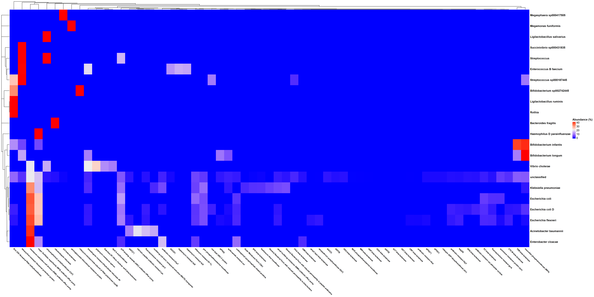
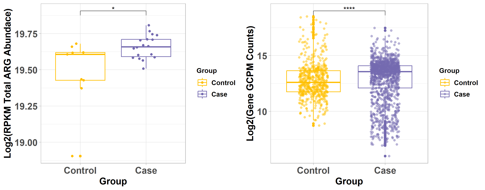

MetaShiny app allows users to analyze and visualize metagenomic short-read sequencing data.
It takes a list containing the sample name and the condition.
The Fastq file must have a the same name as the sample name in the list.
The app will perform end to end analysis using the sequencing data with appropriate tools.
Instructions
Code can be found on github: https://github.com/Nirmal2310/MetaShiny
Please post issues on github, and feel free to contribute by forking and submitting development branches.
To run this app locally on your machine, download R or RStudio in the local system.
You may now run the shiny app with just one command in R:
shiny::runGitHub("MetaShiny", "Nirmal2310")If you are running the App for the first time please tick the checkbox “setup” in the Input Data tab to install the required tools, R packages and databases.
Input Data
Input Data
You can use this app by
- Exploring the pre-loaded example data set. This is a pre-loaded metagenome DNA sequencing of ten samples example for exploring the app’s features.
- Upload your own data
Data Format
- Must be a .CSV comma-separated-value file.
- File must have a header row.
- First column must be named as
Sample_Id. - Second column must be named as
Group.

Ouput MetaData
- Each row of the 3rd column represents the ARG term.
- Additional columns provide information about
- Sample Id
- Bacterial Classification
- ARO Term
- Counts
- ARG Length
- Percentage Identity
- Drug Class
- Resistance Mechanism
- AMR Gene Family
- Percentage Coverage
- Normalized Counts
- Bacterial Family
- Group
All the subsequent visualizations will be done using this metadata.
Example file: <Sample_information.csv>
Analysis: When the list is uploaded, the data is then analyzed by the app. The app first utilizes fastp and bbtools for data pre-processing. The preprocessed FASTQ reads are then assembled using SPADES. The de novo assembled metagenome is then binned in MAGs using metaWRAP. The binned MAGs are annotated using GTDBtk. Antimicrobial Resistance Genes (AMRs) are then identified using RGI with CARD database. The counts for each ARG are calculated using SAMtools and the table from the unix pipeline contains the ARO term, Counts, Bacterial Classification and other terms. The counts for each ARG terms are then normalized using GPCM method in R and then utilized for further analysis and visualization in R.

Analyzed Data

Example file: <consolidated_data.csv>
Visualizations
ARG Cohort Analysis
Drug Class
This plot represents the resistance genes for antimicrobial drugs classified by the CARD database. The Y-axis represents the Drug class and X-axis represents the sum of all the ARG abundance belonging to the drug class.

Resistance Mechanism
This plot displays the mechanism of resistance of each ARG, depicted as a proportion of all ARGs detected in the given cohort.

ARG Distribution among Bacterial Species
ARG Richness Per Bacterial Species
The circular plot shows the ARG richness (number of unique ARGs) for each bacterial species. The bars are grouped by the bacterial species family information. This plot shows the diversity of ARGs per bacterial species across the cohort.

ARG Abundance Per Bacterial Species
The circular plot shows the AMR Gene Family abundance {(Normalized Counts/sum(Normalized counts))*100} that are grouped by the bacterial species. This plot shows the abundance of ARGs per bacterial species across the cohort.

Both these plots can be utilized to target the most significant AMR causing bacterial species.
Alpha Diversity
The plot shows the alpha diversity for each ARG terms. Alpha diversity is a measure of the number of species that are present in a given community. This plot compares the ARG diversity between Control and Case.

Abundance Diversity
The plot shows the comparison between the abundance of each ARG term between the Control and Case. This plot is useful to identify the ARGs that are abundant in the Control but not in the Case. The p-value was calculated using Kruskal-Walis test.

PCA Plot
This plot uses Principal Component Analysis (PCA) to calculate the principal components of the count data using data from all ARO terms. Samples are projected on the first two principal components (PCs) and the percent variance explained by those PCs are displayed along the x and y axes. Ideally your samples will cluster by group identifier.

HeatMap
This plot shows Heatmap with ARG abundance in terms of the log2(Normalized Counts) across the samples. Both samples and ARGs were clustered based on ARG abundance with Euclidean distance by complete linkage hierarchical clustering.